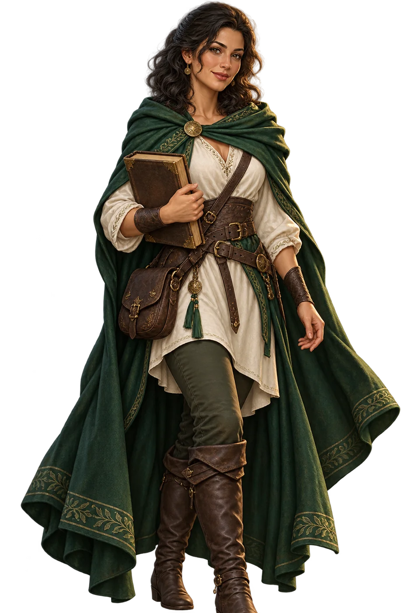
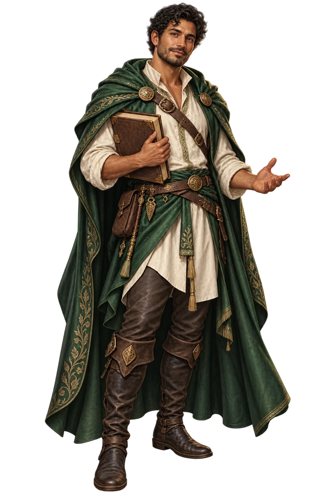

Un nombre. Una mirada. Un camino por descubrir.
Forja tu personaje y conserva las huellas de tu aventura por Ludaria.
Kael y Kira comparten las mismas posibilidades.
Tú eliges cómo construir tu historia.


Dos buscadores. El mismo punto de partida: 1 en cada atributo.